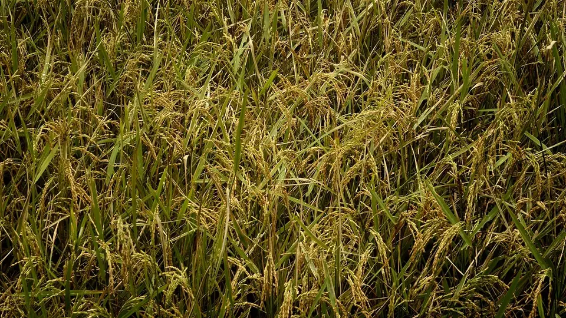

தமிழ்நாட்டின் பருவமழை தலைகீழ் — உண்மையான மழை அக்டோபர் முதல் டிசம்பர் வரை. அதனால் இங்குள்ள பயிர் நாட்காட்டி நாட்டின் மற்ற பகுதிகளிலிருந்து வேறுபடுகிறது.

தமிழ்நாடுதான் நாட்டின் ஒரே பெரிய வேளாண் மாநிலம், இங்கு முதன்மை மழை ஜூன்-ஜூலையில் அல்ல — அக்டோபர் முதல் டிசம்பர் வரை. இந்த ஒரு விஷயமே மாநிலத்தின் முழு பயிர் நாட்காட்டியையும் மாற்றிவிடுகிறது. வட இந்தியாவில் ரபி தயாராகும் நேரத்தில், தமிழ்நாட்டில் மிகப் பெரிய நெல் பயிரான சம்பா வயலில் நின்றுகொண்டிருக்கும்.
வட இந்திய நாட்காட்டியைத் தமிழ்நாட்டில் பயன்படுத்தினால், விதைப்பு ஒரு மாதம் முன்-பின் ஆகிவிடும்; அந்த ஒரு தவறே அறுவடையை நேராகப் புயலின் வாய்க்குள் தள்ளிவிடும். இந்தக் கட்டுரை தமிழ்நாட்டின் 7 வேளாண் காலநிலை மண்டலங்கள், நெல்லின் மூன்று பருவங்கள், எட்டு வருமானப் பயிர்கள், விற்பனைக்கான நான்கு வழிகள் — அனைத்தையும் ஒரே இடத்தில் தருகிறது.
| விஷயம் | எண் |
|---|---|
| வேளாண் காலநிலை மண்டலங்கள் | 7 — வடகிழக்கு, வடமேற்கு, மேற்கு, காவிரி டெல்டா, தெற்கு, அதிக மழை மற்றும் மலைப் பகுதி |
| சராசரி ஆண்டு மழை | 921.4 மி.மீ. |
| வடகிழக்குப் பருவமழையின் பங்கு | 442.8 மி.மீ. — ஆண்டு மழையில் 48% |
| தென்னையில் நாட்டில் இடம் | இரண்டாவது — நாட்டு உற்பத்தியில் 27% |
| ஜவ்வரிசியில் பங்கு | சேலம் மாவட்டம் மட்டுமே நாட்டின் 80%-க்கும் மேல் |
| உழவர் சந்தைகள் | மாநிலம் முழுவதும் 195 |
விதை, உரம், விதைப்புத் தேதி — மூன்றும் மண்டலத்தால் தீர்மானிக்கப்படுகின்றன, மாவட்டத்தால் அல்ல. உங்கள் மண்டலத்தை அடையாளம் கண்டுவிட்டால், ஆலோசனையில் பாதி தானாகவே சரியாகிவிடும்.
| மண்டலம் | முக்கிய மாவட்டங்கள் | முதன்மைப் பயிர்கள் |
|---|---|---|
| காவிரி டெல்டா | தஞ்சாவூர், திருவாரூர், நாகப்பட்டினம், மயிலாடுதுறை, திருச்சிராப்பள்ளி | நெல் (குறுவை, சம்பா, தாளடி), உளுந்து, எள் |
| மேற்கு (கொங்கு) | கோயம்புத்தூர், திருப்பூர், ஈரோடு, கரூர் | தென்னை, மஞ்சள், வாழை, பருத்தி, மக்காச்சோளம் |
| வடமேற்கு | சேலம், நாமக்கல், தருமபுரி, கிருஷ்ணகிரி | மரவள்ளி, கேழ்வரகு, மா, கோழிப் பண்ணை |
| வடகிழக்கு | வேலூர், திருவண்ணாமலை, விழுப்புரம், காஞ்சிபுரம், செங்கல்பட்டு | நிலக்கடலை, நெல், கரும்பு, மல்லிகை |
| தெற்கு | மதுரை, விருதுநகர், தூத்துக்குடி, இராமநாதபுரம் | மல்லிகை, பருத்தி, சோளம், கம்பு, மிளகாய் |
| அதிக மழை | கன்னியாகுமரி | ரப்பர், தென்னை, வாழை, நெல் |
| மலைப் பகுதி | நீலகிரி, கொடைக்கானல், ஏற்காடு | தேயிலை, காபி, உருளைக்கிழங்கு, கேரட், மசாலைப் பயிர்கள் |
இதுதான் தமிழ்நாட்டு வேளாண்மையின் மிக முக்கியமான விஷயம். மற்ற மாநிலங்களில் நெல்லுக்கு ஒரே ஒரு முதன்மைப் பருவம்தான்; காவிரி டெல்டாவில் மூன்று உண்டு, மூன்றின் நீர் ஆதாரமும் வேறு வேறு.
| பருவம் | நடவு | அறுவடை | நீர் எங்கிருந்து |
|---|---|---|---|
| குறுவை (குறுகியது) | ஜூன்-ஜூலை | செப்டம்பர்-அக்டோபர் | மேட்டூர் அணையிலிருந்து காவிரி நீர் |
| சம்பா (முதன்மை) | ஆகஸ்ட்-செப்டம்பர் | ஜனவரி-பிப்ரவரி | வடகிழக்குப் பருவமழை + கால்வாய் |
| தாளடி (தாமதம்) | செப்டம்பர்-அக்டோபர் | பிப்ரவரி-மார்ச் | கிட்டத்தட்ட முழுவதும் வடகிழக்குப் பருவமழை |
நாட்டின் மற்ற பகுதிகளில் தென்மேற்குப் பருவமழை (ஜூன்-செப்டம்பர்)தான் எல்லாம். தமிழ்நாட்டில் அதே பருவமழை மேற்குத் தொடர்ச்சி மலையின் மழை நிழலில் விழுகிறது, எனவே சமவெளி மாவட்டங்களுக்குக் குறைவாகவே கிடைக்கிறது. உண்மையான மழை அக்டோபர்-டிசம்பரில் வருகிறது — 442.8 மி.மீ., அதாவது ஆண்டு மழையின் 48%. கடலோர மாவட்டங்களில் இந்தப் பங்கு கிட்டத்தட்ட 60% வரை செல்கிறது.
நெல் வயிற்றை நிரப்புகிறது, ஆனால் தமிழ்நாட்டு விவசாயியின் பையை நிரப்புவது இந்தப் பயிர்கள். ஒவ்வொன்றுக்கும் தனித் தனி மண்டலம் உண்டு, ஒவ்வொன்றின் முழு வழிகாட்டியும் கீழே இணைக்கப்பட்டுள்ளது.
| பயிர் | மண்டலம் | ஏன் சிறப்பு |
|---|---|---|
| தென்னை | கோயம்புத்தூர், திருப்பூர், பொள்ளாச்சி, தஞ்சாவூர், திண்டுக்கல் | நாட்டு உற்பத்தியில் 27% — வழிகாட்டி |
| மஞ்சள் | ஈரோடு, சேலம், கோயம்புத்தூர், தருமபுரி | ஈரோடு நாட்டின் மிகப் பெரிய மஞ்சள் சந்தை — வழிகாட்டி |
| மரவள்ளி | சேலம், நாமக்கல், தருமபுரி, விழுப்புரம் | நாட்டின் 80%+ ஜவ்வரிசி — வழிகாட்டி |
| மல்லிகை | மதுரை, திண்டுக்கல், விருதுநகர், தேனி, சிவகங்கை | GI அங்கீகாரம் பெற்ற "மதுரை மல்லி" — வழிகாட்டி |
| நிலக்கடலை | திருவண்ணாமலை, விழுப்புரம், வேலூர், நாமக்கல் | எண்ணெய், விதை இரண்டுக்கும் சந்தை — நோய் வழிகாட்டி |
| வாழை | திருச்சிராப்பள்ளி, தேனி, கோயம்புத்தூர், டெல்டா | பரப்பளவில் நாட்டிலேயே முதலிடம் — வழிகாட்டி |
| முண்டு மிளகாய் | இராமநாதபுரம், தூத்துக்குடி, சிவகங்கை | GI அங்கீகாரம் பெற்ற மானாவாரி சிவப்பு மிளகாய் — வழிகாட்டி |
| கேழ்வரகு | தருமபுரி, கிருஷ்ணகிரி, சேலம், வேலூர் | குறைந்த நீரில் விளையும், அரசுக் கொள்முதல் உண்டு — வழிகாட்டி |
| மாதம் | அவசியமான வேலை |
|---|---|
| ஜூன்-ஜூலை | குறுவை நெல் நடவு; கேழ்வரகு காரிஃப் விதைப்பு; மஞ்சள் நடவை முடிக்கவும் |
| ஆகஸ்ட் | சம்பா நாற்றங்கால்; நீண்ட கால ரகங்களை ஆகஸ்ட் 15 முதல் நடவு தொடங்கவும்; நிலக்கடலையில் திக்கா நோய் கண்காணிப்பு |
| செப்டம்பர் | சம்பா நடவு; குறுவை அறுவடை மற்றும் DPC விற்பனை; தாளடி விதைப்பு |
| அக்டோபர்-டிசம்பர் | வடகிழக்குப் பருவமழை — வடிகால் வெட்டுதல், புயல் பாதுகாப்பு, ஏரி நிரப்புதல் |
| ஜனவரி-பிப்ரவரி | சம்பா அறுவடை; மஞ்சள் தோண்டி வேகவைத்தல்; பொங்கலுக்குப் பூ-காய்கறிக்கு மிகச் சிறந்த விலை |
| மார்ச்-மே | மரவள்ளி அறுவடை; கோடை ஆழ உழவு; தென்னையில் பாசனம் மற்றும் வெள்ளை ஈ சோதனை |
மூன்று விஷயங்களை நினைவில் வையுங்கள். முதலாவது — தமிழ்நாட்டில் வேளாண் ஆண்டு அக்டோபரில் தொடங்குகிறது, ஜூனில் அல்ல; ஒவ்வொரு விதைப்புத் தேதியும் வடகிழக்குப் பருவமழையை வைத்தே தீர்மானிக்கப்படுகிறது. இரண்டாவது — உங்கள் வேளாண் மண்டலத்தைத் தெரிந்து கொள்ளுங்கள், ஏனெனில் டெல்டாவுக்கான ஆலோசனை கொங்கு மண்டலத்திலும், மலைப் பகுதிக்கான ஆலோசனை டெல்டாவிலும் வேலை செய்யாது. மூன்றாவது — வருமானம் வணிகப் பயிரிலிருந்தும் நேரடி விற்பனையிலிருந்தும் வருகிறது; நெல் வயிற்றை நிரப்புகிறது, தென்னை-மஞ்சள்-மல்லிகை பையை நிரப்புகின்றன.
பருவம் தலைகீழ், எனவே நாட்காட்டியையும் தலைகீழாகவே வையுங்கள் — இதுதான் தமிழ்நாட்டு வேளாண்மையின் முழு ரகசியம்.
சந்தை விலை, அரசுத் திட்டங்கள், விதை-உரத் தகவல், பயிர் நோய்க்கான தீர்வு — அனைத்தும் தமிழில்.
KrashiMitra.in-க்குச் செல்லுங்கள் →நெல் விலைதேங்காய் விலைமஞ்சள் விலைவாழை விலைஅனைத்துப் பயிர் விலைகள் →
📲 இந்தக் கட்டுரையை WhatsApp-இல் அனுப்பு